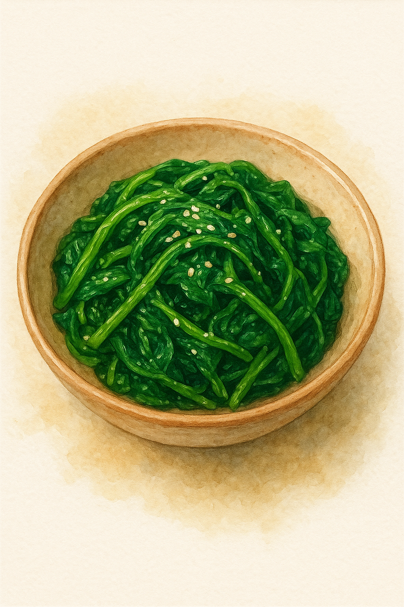

Spinach Banchan

Spinach Banchan is a popular Korean side dish made of blanched and seasoned spinach.
Ingredients
- 1 garlic clove, grinded
- 1 green onion, chopped
- 2 teaspoon seasame seeds, grinded
- 8 oz spinach
- 1 1/2 teaspoon of regular soy sauce
- 1 1/2 teaspoon seaseme oil
Steps
- Thoroughly wash the spinach
- Put a bowl of water to boil
- Blanch the spinach for 1 minute, until it shrinks in size
- Put the spinach in an ice bath
- Rinse and squeeze out the excess water
- Make the spinach into a small ball and cut into 4 pieces
- Mix the spinach, garlic, green onion, seasame seeds, soy sauce and seasame oil
- Transfer to a bowl and serve
Home